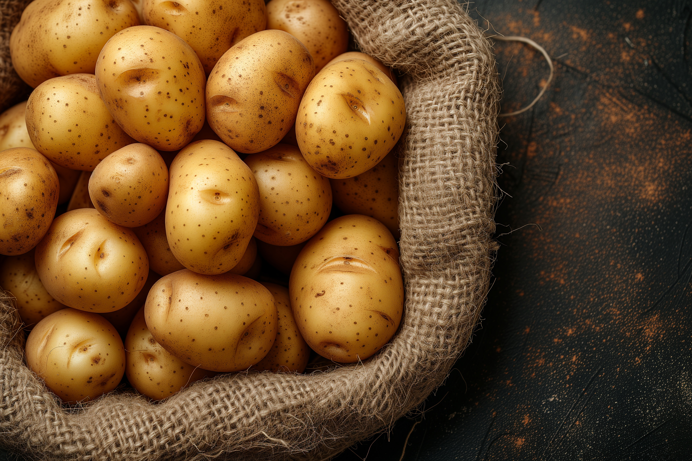
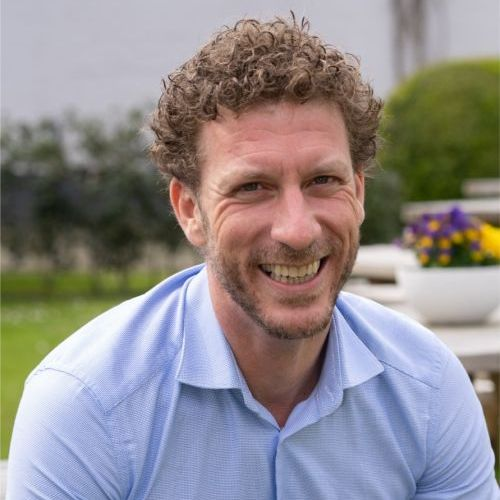
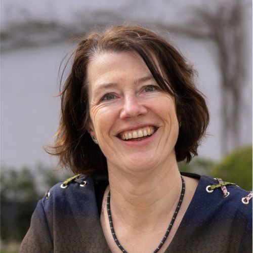
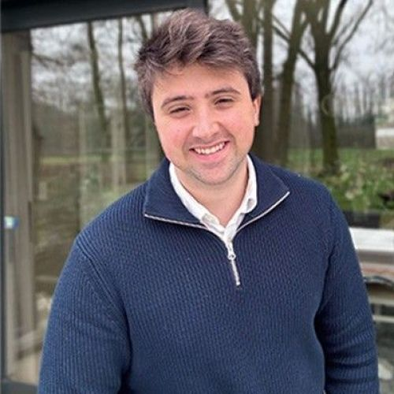
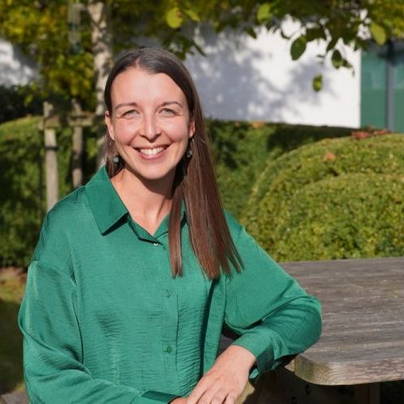

Belgische aardappelhandel & -verwerking
Commerce et transformation belges de la pomme de terre
Belgapom verenigt handelaars, verpakkers en verwerkers en verdedigt hun belangen in België en ver daarbuiten.
Belgapom rassemble les commerçants, conditionneurs et transformateurs et défend leurs intérêts en Belgique et bien au-delà.
Belgapom verenigt zo’n 80 bedrijven uit de aardappelketen: van grote diepvriesfabrikanten tot aardappelhandelaars, pootgoedhandelaars, verpakkers voor de retail en producenten van verse frietjes in de frituur. Samen vormen zij het kloppend hart van de Belgische aardappelverwerking.
Belgapom regroupe environ 80 entreprises de la filière pomme de terre : des grands fabricants de produits surgelés aux négociants en pommes de terre, négociants en plants, conditionneurs pour la grande distribution et producteurs de frites fraîches pour l’horeca. Ensemble, ils constituent le cœur battant de la transformation belge de la pomme de terre.
We verdedigen de belangen van onze sector in de media en in verschillende gremia, onder meer bij organisaties zoals UNIZO en bij beleidsmakers op Vlaams, federaal en Europees niveau. Nieuwe wetgeving – denk aan de Green Deal, de Natuurherstelwet of het mestactieplan – vertalen we naar heldere informatie en praktische impact voor onze leden.
Nous défendons les intérêts du secteur dans les médias et dans divers organes de concertation, notamment auprès d’organisations comme l’UNIZO et auprès des décideurs politiques aux niveaux flamand, fédéral et européen. Les nouvelles réglementations – telles que le Green Deal, la loi sur la restauration de la nature ou les plans d’action nitrates – sont traduites en informations claires et en impact concret pour nos membres.
Daarnaast werken we mee aan goede landbouwpraktijken en aan de verduurzaming van de grondstof: de aardappel. Belgapom is mede-oprichter van het Vegaplan-lastenboek en werkt nauw samen met landbouworganisaties en onderzoeksinstellingen zoals ILVO om voedselveiligheid, milieuzorg en innovatie te garanderen.
Nous contribuons également aux bonnes pratiques agricoles et à la production de la matière première : la pomme de terre. Belgapom est co-fondateur du cahier des charges Vegaplan et collabore étroitement avec les organisations agricoles et des centres de recherche tels que l’ILVO afin de garantir la sécurité alimentaire, le respect de l’environnement et l’innovation.

In deze video maak je kennis met de brede waaier aan activiteiten waarmee Belgapom de sector doet groeien en bloeien:
Cette vidéo vous présente le large éventail d’activités par lesquelles Belgapom fait grandir et prospérer le secteur :
Zo houden we overal de vinger aan de pols en zorgen we ervoor dat de Belgische aardappelindustrie kan blijven groeien, investeren en innoveren.
De cette manière, nous gardons le doigt sur le pouls partout et veillons à ce que l’industrie belge de la pomme de terre puisse continuer à croître, investir et innover.
Toegang tot exclusieve marktgegevens, prijsinformatie en exportcijfers om strategische beslissingen te ondersteunen.
Accès à des données de marché exclusives, à des informations sur les prix et aux chiffres d’exportation pour soutenir vos décisions stratégiques.
Een sterke stem bij onderhandelingen over wetgeving rond milieu, voedselveiligheid, handel en duurzaamheid – op Vlaams, federaal en Europees niveau.
Une voix forte lors des négociations sur la législation relative à l’environnement, à la sécurité alimentaire, au commerce et à la durabilité – aux niveaux flamand, fédéral et européen.
Begeleiding rond Vegaplan, Gids Autocontrole en certificeringen, met duidelijke info over fytosanitaire eisen en residulimieten.
Accompagnement autour de Vegaplan, du Guide d’Autocontrôle et des certifications, avec des informations claires sur les exigences phytosanitaires et les limites de résidus.
Uitwisseling met collega’s uit de volledige keten via werkgroepen, events, studiemomenten en internationale missies.
Échanges avec des collègues de toute la chaîne via des groupes de travail, des événements, des sessions d’étude et des missions internationales.
Ondersteuning bij markttoegang, exportformaliteiten en opvolging van handelsakkoorden met derde landen.
Soutien en matière d’accès aux marchés, de formalités d’exportation et de suivi des accords commerciaux avec les pays tiers.
Toegang tot projecten en expertise rond zuinig watergebruik, circulariteit en Europese duurzaamheidsrapportering.
Accès à des projets et à une expertise autour de l’utilisation rationnelle de l’eau, de la circularité et du reporting européen en matière de durabilité.
"Het lidmaatschap bij Belgapom zorgt ervoor dat wij altijd proactief geïnformeerd zijn over nieuwe wetgeving. Een onmisbare partner voor onze export."
« Grâce à notre adhésion à Belgapom, nous sommes toujours informés de manière proactive des nouvelles réglementations. Un partenaire indispensable pour nos exportations. »

Directeur en CEO van Belgapom
Directeur et CEO de Belgapom
Christophe volgt binnen FVPhouse de economische en sociale dossiers op, en onderhoudt de contacten met de landbouwdossiers. Hij verzekert ook de public relations.
Au sein de FVPhouse, Christophe suit les dossiers économiques et sociaux et entretient les contacts pour les dossiers agricoles. Il est également responsable des relations publiques.

Import-Export Manager, algemeen secretaris Fresh Trade Belgium
Import-Export Manager, secrétaire générale de Fresh Trade Belgium
Veerle volgt binnen FVPhouse alle dossiers m.b.t. in- en uitvoer op.
Au sein de FVPhouse, Veerle suit tous les dossiers relatifs à l’importation et à l’exportation.

Marketing & Communication Officer FVPhouse & Belgapom
Marketing & Communication Officer FVPhouse & Belgapom
Lucas ontwikkelt en implementeert marketing- en communicatiestrategieën om de organisatiedoelen te behalen.
Lucas développe et met en œuvre des stratégies de marketing et de communication afin d’atteindre les objectifs de l’organisation.

Algemeen secretaris & Wetenschappelijk adviseur Vegebe
Secrétaire générale & Conseillère scientifique de Vegebe
Annelien coördineert het beleid met bijzondere aandacht voor de wetenschappelijke en technische dossiers die de federaties aanbelangen.
Annelien coordonne la politique, avec une attention particulière pour les dossiers scientifiques et techniques qui concernent les fédérations.
Leden Belgapom
Membres de Belgapom
Werknemers in handel en verwerking
Travailleurs dans le commerce et la transformation
Tonnen aardappelen verwerkt per jaar
Tonnes de pommes de terre transformées par an
Euro investeringen in 2023
Euros d’investissements en 2023
In Vlaanderen bedraagt het aardappelareaal ongeveer 55 000 ha, in Wallonië rond 45 000 ha. België exporteert naar schatting 90 % van zijn diepvriesfrieten – een echte wereldspeler dus.
En Flandre, la superficie consacrée à la pomme de terre s’élève à environ 55 000 ha, contre environ 45 000 ha en Wallonie. On estime que la Belgique exporte près de 90 % de ses frites surgelées – une véritable puissance mondiale.
Heb je vragen over het lidmaatschap of wil je graag kennismaken? Vul het formulier in of stuur ons een e-mail. De lidgelden worden berekend op basis van de activiteit en grootte van je bedrijf.
Vous avez des questions concernant l’adhésion ou vous souhaitez faire connaissance ? Remplissez le formulaire ou envoyez-nous un e-mail. Les cotisations sont calculées en fonction de l’activité et de la taille de votre entreprise.
Adres: Adresse : Guldensporenpark 120, 9820 Merelbeke
E-mail: E-mail : info@belgapom.be
Let op: het formulier hiernaast opent uw standaard e-mailprogramma.
Attention : le formulaire ci-contre ouvre votre programme de messagerie par défaut.